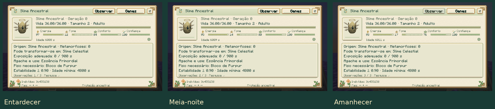

Cinco linhagens de conquista
Guia do mod · Evolução · Genética
Eclipse, Supercélula, Aurora, Ancestral e Celestial exigem uma preparação própria, além dos requisitos normais de cuidado, genes e reprodução ou metamorfose. O analisador mostra o progresso do indivíduo na aba Evolução. Os marcos ficam salvos no slime e acompanham a cápsula.
| Forma | Preparação adicional |
|---|---|
| Eclipse | Solar carregado por 30 segundos de sol e Lunar de Lua Nova; reprodução ao entardecer, com Estilhaço Prismático no inventário do cuidador. |
| Supercélula | Tempestade recebe três cargas de raios distintos conduzidos por um para-raios próximo. |
| Aurora | Prismático passa 30 segundos em cada um de três biomas diferentes; conclusão em noite limpa na região gelada apropriada. |
| Ancestral | Vazio usa Selo Primordial, fabricado com troféus de três bosses, Estrela do Nether e Tabuleta Antiga do End. |
| Celestial | Ancestral com confiança 80, pesquisa completa da espécie e três observações astronômicas, em ordem. |
Eclipse: preparar os dois pais
Mantenha um Solar adulto, calmo e vinculado, com confiança mínima 40, sob céu aberto durante o dia, sem chuva. Ele acumula 600 ticks de exposição solar válida, aproximadamente 30 segundos carregado. A carga não desaparece ao recolher o slime; a exposição para de avançar na cápsula.
Escolha um Lunar cuja fase individual seja Lua Nova. A fase é definida para cada indivíduo; esperar a lua do mundo mudar não altera esse Lunar. Prepare os dois pais para reprodução normalmente. Ambos precisam estar sob céu aberto entre os ticks 12.000 e 12.999 do dia. O mesmo cuidador deve estar próximo, com visão dos pais e um Estilhaço Prismático no inventário.
Só um nascimento aceito consome o estilhaço e a carga solar. Não é necessário jogar o item no chão. Cruzar dois Eclipses continua exigindo o entardecer, céu aberto, cuidador presente e catalisador; isso evita contornar o ritual multiplicando o primeiro casal.
Supercélula: conduzir a tempestade
Um Tempestade adulto vinculado, com confiança mínima 40, precisa ficar até oito blocos do raio que atinge um para-raios energizado, durante uma tempestade com trovões. São três raios diferentes; os flashes repetidos do mesmo raio contam uma única vez. Raios normais ou invocados seguem essa mesma verificação do para-raios e do clima.
Com três cargas, cumpra a metamorfose: para-raios como substrato, Picos Ventosos ou Picos Pedregosos Ventosos, trovões, céu aberto, idade 96.000, potência elemental expressa ≥0,90 e 12.000 ticks de exposição válida. Use uma carga de vento; o custo é 40 de energia e +25 de fome.
Aurora: viajar com o Prismático
Leve o mesmo Prismático adulto vinculado, calmo e com confiança mínima 40, a três biomas de IDs diferentes. Cada visita exige 600 ticks válidos, aproximadamente 30 segundos carregado. A visita em andamento reinicia ao mudar de bioma; as visitas já concluídas permanecem registradas.
Depois, conclua em Picos Congelados ou Espigões de Gelo, sobre gelo azul, à noite, sem chuva e sob céu aberto. Ainda são necessários idade 96.000, estabilidade expressa ≥0,90 e 12.000 ticks de exposição válida. Use um Estilhaço Prismático; o custo é 40 de energia e +25 de fome.
Ancestral: conquistar o Selo
Fabrique um Selo Primordial com uma unidade de cada componente: Geleia Real, Fragmento Ígneo, Estilhaço Prismático, Estrela do Nether e Tabuleta Antiga. Os três primeiros vêm do Rei, Coração Magmático e Colosso; a tabuleta exige explorar a Câmara Ancestral no End. A receita não usa Essência Ancestral, permitindo obter o primeiro Ancestral sem depender dele.
Leve o Vazio adulto às Terras Altas do End, sobre púrpura. Precisa de idade 48.000, estabilidade expressa ≥0,80 e 12.000 ticks de exposição válida. Use o Selo no slime; custa 40 de energia e +30 de fome. Usar outro Selo no altar da Câmara inicia o encontro com o boss Primordial, um uso separado.
Celestial: vínculo, pesquisa e observações
Conclua as seis etapas de pesquisa do Ancestral na Slimepedia do cuidador: observar, alimentar, analisar, reproduzir, transformar e coletar material. Alcance confiança 80 com o indivíduo escolhido.
No Overworld, coloque esse Ancestral adulto e calmo sobre um bloco de ametista, sob céu aberto e sem chuva. Com energia mínima 60, abra seu analisador e clique em Observar, nesta ordem:
| Observação | Horário do mundo, módulo 24.000 |
|---|---|
| Entardecer | 12.000–12.999 |
| Meia-noite | 17.500–18.499 |
| Amanhecer | 23.000–23.999 |
Cada confirmação custa quatro de energia e acrescenta dois de fome. Clicar novamente na mesma janela não avança a observação seguinte. Não é necessário fazer as três no mesmo dia. Uma prévia de cápsula permite consultar informações, mas não realizar observações.

Após as três observações, conclua a metamorfose nas Terras Altas do End, sobre púrpura: idade 96.000, estabilidade expressa ≥0,90 e 18.000 ticks de exposição válida. Use uma Essência Primordial; custa 50 de energia e +35 de fome.